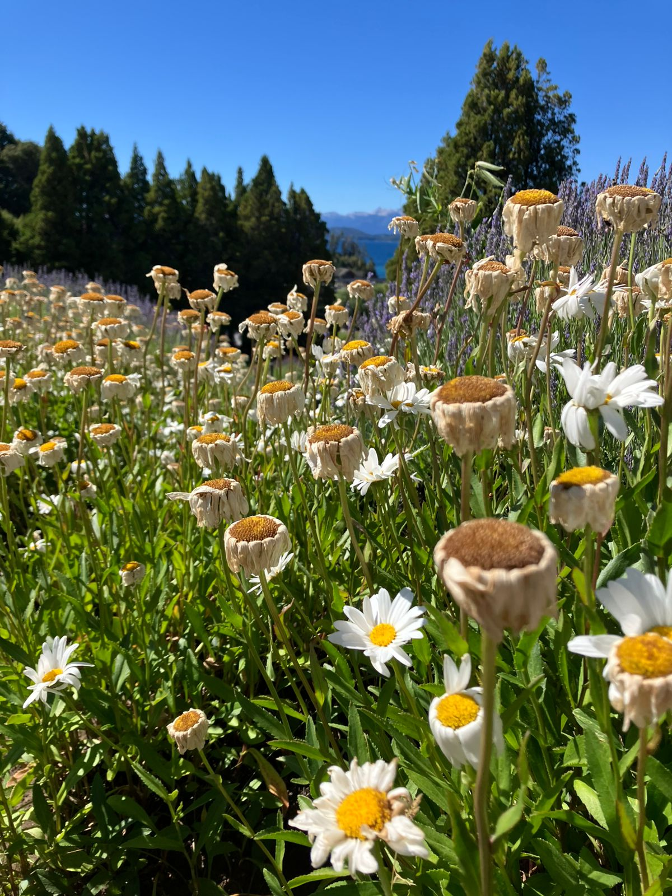
Vista 01
Margaritas en el parque.
Ver detalleRegistro visual de paisajes y naturaleza en Parque Nacional Nahuel Huapi
Galería fotográfica desarrollada por Javier Troncoso
Una recopilación de paisajes del Parque Nahuel Huapí. Las imágenes rescatan texturas y horizontes capturados a lo largo de mis días de estancia en Bariloche.
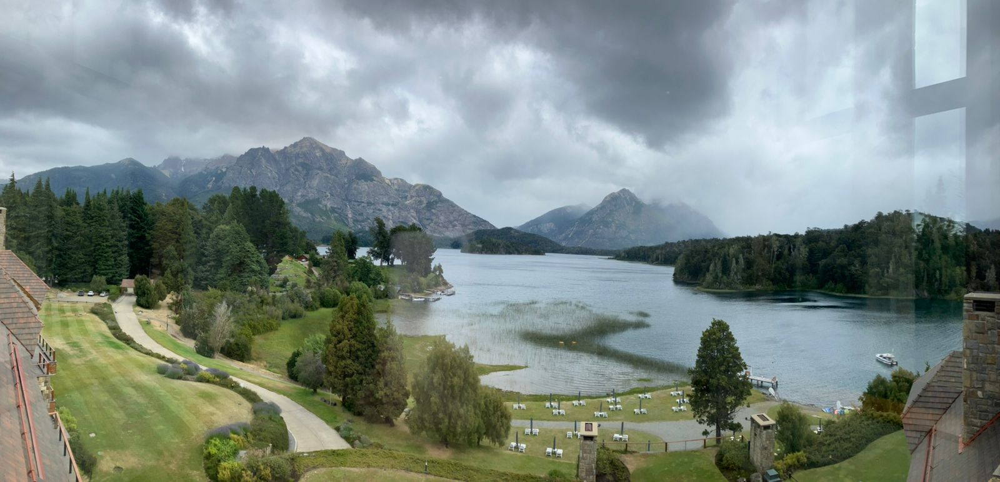

Margaritas en el parque.
Ver detalle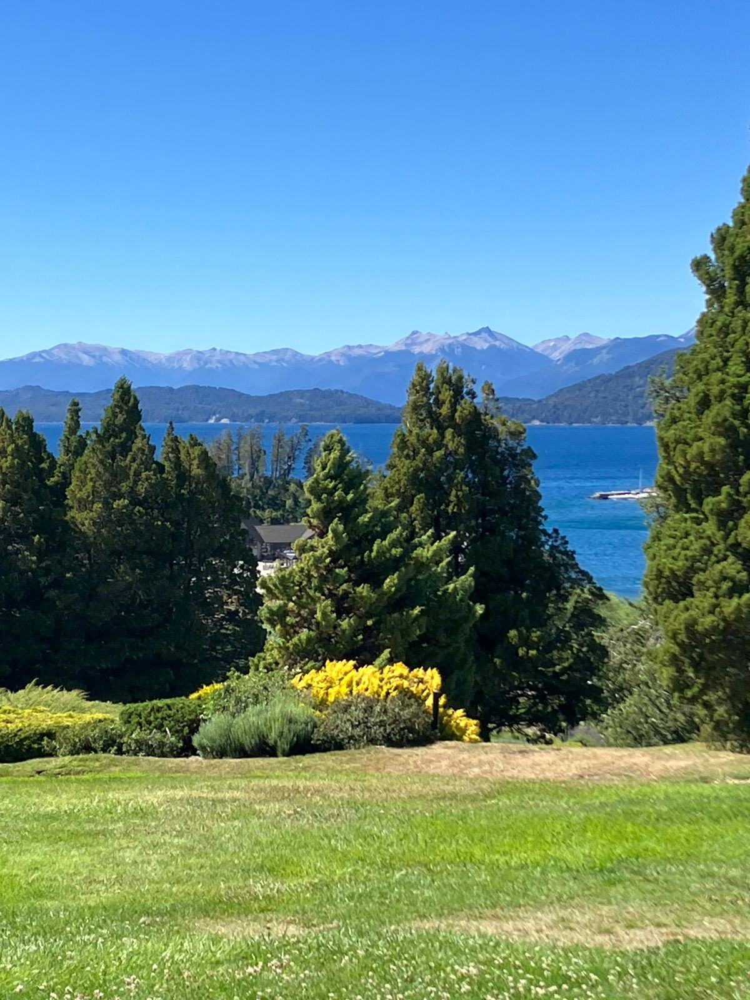
Una hermosa arboleda.
Ver detalle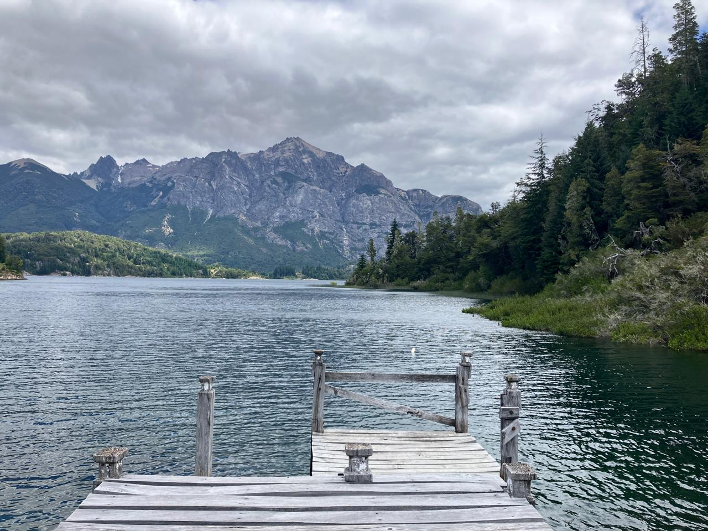
Montañas y el lago.
Ver detalle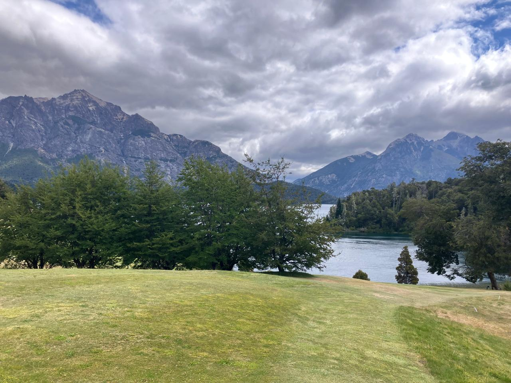
Cerro López y Cerro Tronador.
Ver detalle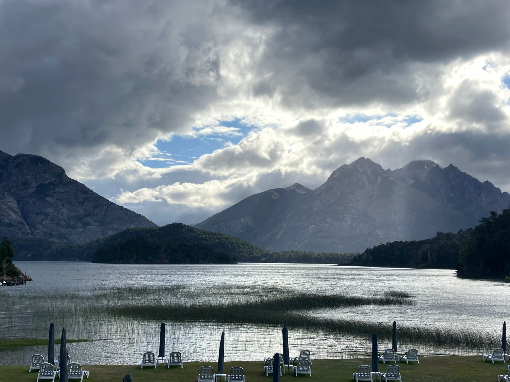
Montañas y atardecer.
Ver detalle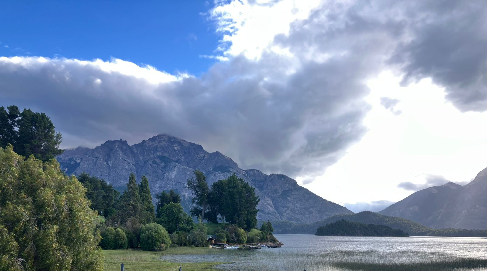
Nubes que asoman tras la montaña.
Ver detalle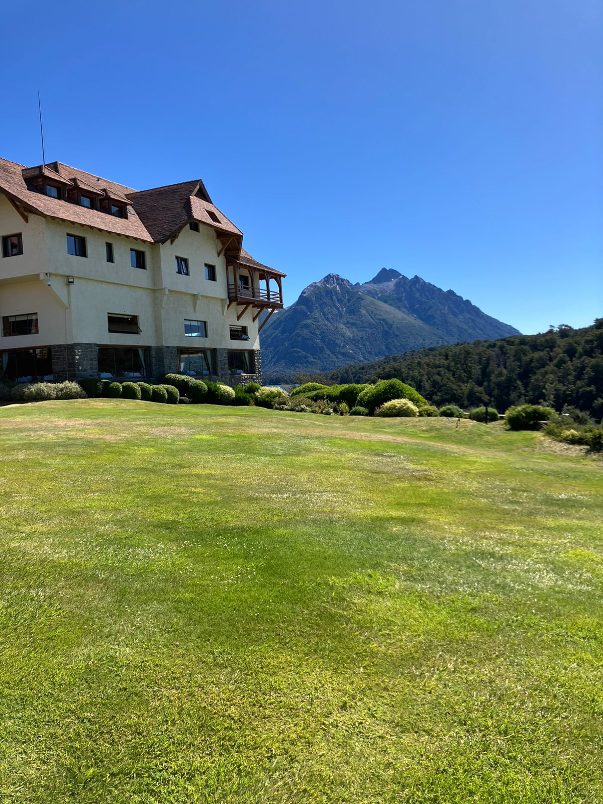
Hotel Llao Llao.
Ver detalle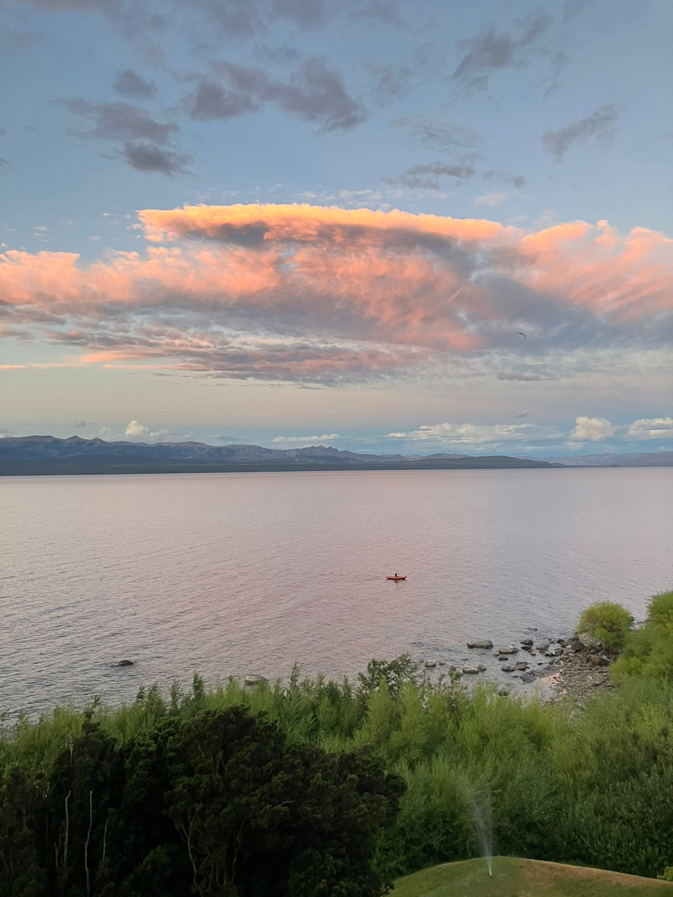
Viaje en Kayak.
Ver detalle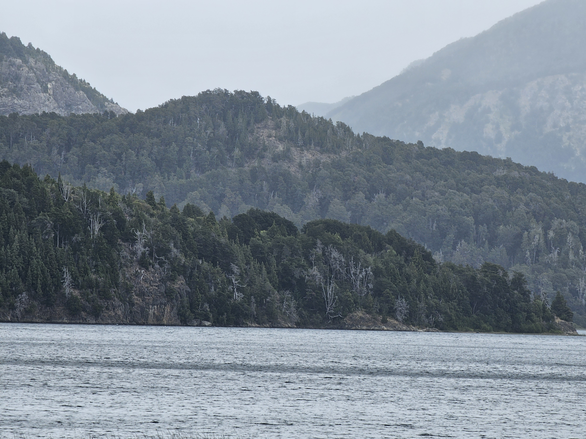
El bosque en la montaña.
Ver detalle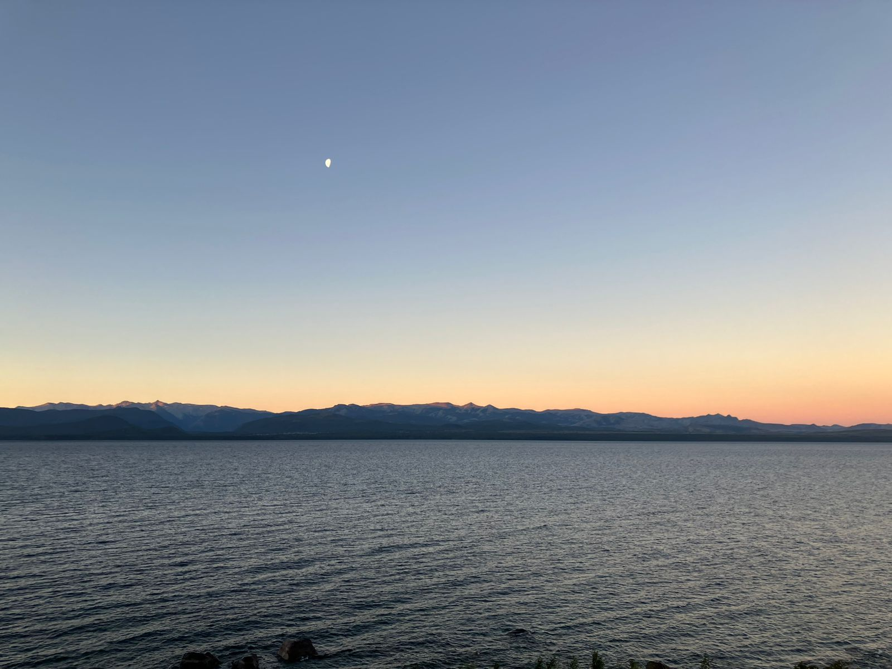
Lago Nahuel Huapi.
Ver detalle